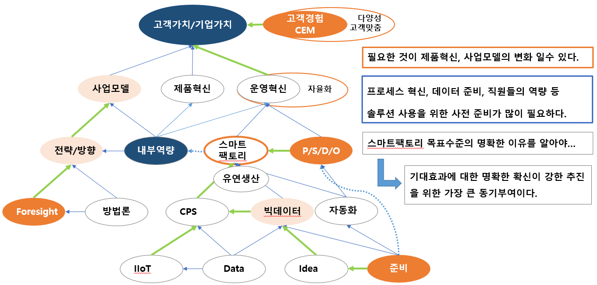

2019 스마트 제조혁신 전문가 양성 과정
*** 스마트 제조혁신의 새로운 기술 4 - 스마트팩토리의 응용솔루션 MES, 스마트 공장, 빅데이터, 제품 경쟁력, 고객가치 증대 우리가 실행하자1. 스마트 팩토리 혹은 자동화가 현재 가장 시급한 혁신의 방향인가?
2. 스마트 팩토리 구축, ERP, PLM, MES, MOM 어떤 경우든 성공하는 방법은 있다는 것이다.
- 기존에 하던 업무절차를 획기적으로 개선되는 경우(전산화)면 성공하기 용이하나,
- 새로운 업무이거나 추가적인 업무 부담이 된다면 실패할 가능성이 높기 때문에 적절한 사전조치가 필요하다.
* 업무수행 담당자가 얼마나 목적에 공감하고 실행할 수 있는가에 대하여, Pilot 으로 실행 가능성을 검증해 보아야 한다.

목적은 기업의 생존과 성장이며 혁신과 솔루션은 목적을 위한 수단이다. 우선 우리의 사업모델의 경쟁력부터 점검 해 보자!
이제 새로운 고객가치는 빅데이터와 디지털 기술을 융합한 것에서 발생하고 있으며, 점차 초연결의 사회로 나아가고 있다.4차 산업혁명 관련 세계 각 기업들의 활동 상황
L_Video_clip_UseCase_DT_ERP_PLM4차 산업혁명의 초 연결의 의미를 제조기업 관점에서 보면 기계, 자재, 공정, 사람들 간에 정보가 연계되고 가상 공간에서 시물레이션하여 최적의 방안으로 의사결정하는 CPPS 시대이다.

스마트 공장 이해, 핵심 디지털 기술, 기업운영 시스템, 핵심내용과 Demo
혁신기업이란, 사업모델, 스마트 공장 수준진단, IIoT, CPS, CLOUD 개념
* 제조기업 4차 산업혁명 초연결 상태의 기업 정보관리 체계
* 솔루션을 도입한다고 사용할 수 있는 것이 아니라, 이전에 목적(기대효과)를 명확하게 하고, 프로세스, 데이터 준비 및 역량이 갖춰지지 않으면 아무런 소용이 없다.
* 차라리, 분명하게 어떠한 목적으로 솔루션이 필요하다면 클라우드 서비스로 도입하여 해당 프로세스로 우리 업무가 수행되는 지를 보는 것이 빠를 수 있다.

업무 솔루션 도입 이전에 프로세스 혁신이 우선이다.
* 여의치 않을경우 검증된 CLOUD서비스에 업무를 맞출 수 있다면 방법이 될 수 있다.

ERP 어떻게 도입하는가 ?
ERP 개념과 도입방안MES, PLM 혹은 ERP를 도입 시에 내부 프로세스 혁신없이 검증된 솔루션을 우선 도입할 경우라면 2가지를 우선 고려해야한다.
하나는 그것을 통한 목적과 기대효과를 정리한 다음, 해당 솔루션이 자신들이 원하는 결과를 얼마나 만족하는 지와 나머지 하나는 그러기 위해 도입하는 기업들이 준비해야할 데이터와 그것을 처리하는 업무절차를 할 수 있는 가 하는 점이다.PLM 어떻게 도입하는가 ?
PLM 개념과 도입방안 PLM
PLM MES 어떻게 도입하는가 ?
MES 개념과 도입방안 MES 자동화, 자율로봇, 자율화 무엇이 다른가 ?
개념과 도입방안 자율화 & 한국과 LCC 국가의 자동화 방식 디지털 분임조
디지털 분임조 MES 오픈 플랫폼
오픈 플랫폼 오픈 플랫폼